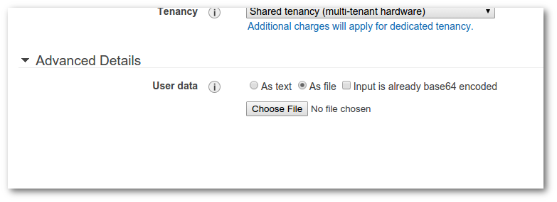
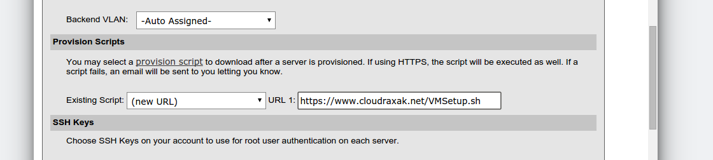
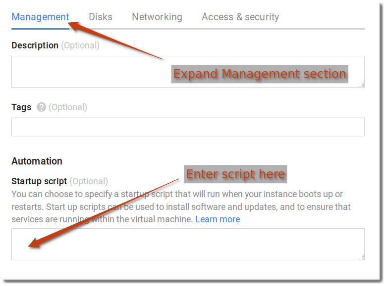

Raxak Protect performs compliance tests on compute assets (servers) that you enroll into our system. These can be virtual machines or bare-metal. Our key architectural philosopy is that we do not place any permanent agent on your machine. Ever. So to enable us to have access your machines, there are three key steps to using Raxak Protect:
Preparing a new asset consists of giving Raxak Protect's servers access to your machine. The process depends on whether the asset already exists, or is being freshly provisioned. If the asset is being freshly provisioned, you can use a Cloud Raxak provided post-provisioning script to make the prep easier. For assets that have already been created, you can still use the scripts, or do the preparation manually.
Fundamentally,
To make it easy to create a suitable user account and to
set up the proper keys and permissions, we have created a
script that can be used with the post-provisioning mechanisms
provided by most public cloud providers. The mechanism for
deploying this script depends on the specific provider but
generally consist of uploading or cutting-and-pasting the
script commands into a text buffer.
Our script is available
at https://www.cloudraxak.net/VMSetup.sh
For specific instructions on how to input this startup script for various service providers, see below:
IBM Soft Layer VMs and bare-metal machines
can be prepared automatically at the time of provisioning.
On Amazon AWS, you need to be careful to select the proper security group that allows ICMP ping and SSH access via port 22.
GCE machines can also be automatically prepared to be enrolled into Raxak Protect via post provisioning scripts
If your cloud provider does not have a mechanism for specifying a post-provisioning script, or if you already have a machine that has been provisioned, you can perform the following steps manually:
Once the target machine is prepped, it can be enrolled into the Raxak Protect service.
Soft Layer users who have subscribed to Raxak Protect via the IBM Marketplace access Raxak Protect via the tile placed in their Markeplace console. This automatically validates the user to Raxak Protect and logs the user into the Raxak Protect system.
Other users access Raxak Protect via https://www.cloudraxak.net/ and authenticate themselves via Google and Amazon single sign on.
Users who have been given a free trial code will be asked to validate their subscription by entering the code. Codes are tied to user emails that correspond to their Marketplace, Google, or Amazon IDs, and cannot be shared by other users
Once the user is logged in, the previously prepared machines can be enrolled using the [Add] button on the [Target Machines] tab in the Raxak Protect console. If you are using VPNs on Soft Layer, see this.
If you used the automatic post-provisioning script (VMSetup.sh), use raxak as the user id in the enrollment form that is presented when you click the [Add] button.
Please contact Cloud Raxak with any suggestions or questions about the Raxak Protect product. If you find any bugs or behavior that you cannot understand, please file a bug report.
First, download the VMSetup.sh script to a local folder by clicking here. On Step 3 (Configure Instance Details) in the Launch Instance workflow, expand the Advanced Details tab at the bottom of the page. Select the "As File" radio button, and browse to the script you downloaded.

On the second page of the provisioning workflow, look for the section marked Provisioning Scripts and enter a new url https://www.cloudraxak.net/VMSetup.sh as shown below. Note that it is critical to use the https protocol to ensure that the script gets auto-executed.

If you want to enroll machines running on Soft Layer that only have private IP addresses, you need to construct a userid associated with your Soft Layer account that has VPN permissions.
On the form presented by the [Add] button, select the [Private IP] checkbox, which will open three new input fields: Username, Password, and Tunnel IP. The Username is the userid with VPN permissions. The Password is the VPN password. The Tunnel IP is the IP address of the tunnel endpoint for one of the Soft Layer data centers. This last field defaults to the endpoint of the Soft Layer San Jose CA data center.
Note that there are certain constraints on VPN access such as the limitation of simultaneous VPN tunnels that may be opened. These can be changed by contacting Soft Layer support and opening an appropriate ticket.
Download the VMSetup.sh script to a local folder by clicking here. Expand the "Management, Disk, ..." section by clicking the downward pointing double arrow to the left of the section heading. Then cut and paste the contents of the VMSetup.sh file into the Startup Script box as shown in the screen image below.
